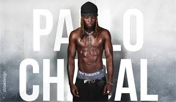

PAULO CHAKAL
Artiste chanteur ivoirien
La voix qui fait vibrer la Côte d'Ivoire et le monde
Écouter maintenantBienvenue sur mon univers musical
Paulo Chakal, de son vrai nom Kadjo Ethyler Paul Eric Michel, est un artiste chanteur et rappeur ivoirien originaire d'Abidjan.
Sa musique est une fusion unique entre les sonorités traditionnelles ivoiriennes et les rythmes modernes (afrobeat, trap, RnB). Avec plus de 119 872 auditeurs mensuels sur Spotify, il fait vibrer son public à chaque note.
Authentique, il utilise le nouchi (argot ivoirien) dans ses textes, ce qui le connecte profondément à son public.
Galerie
En studio
En concert

Portrait

Backstage